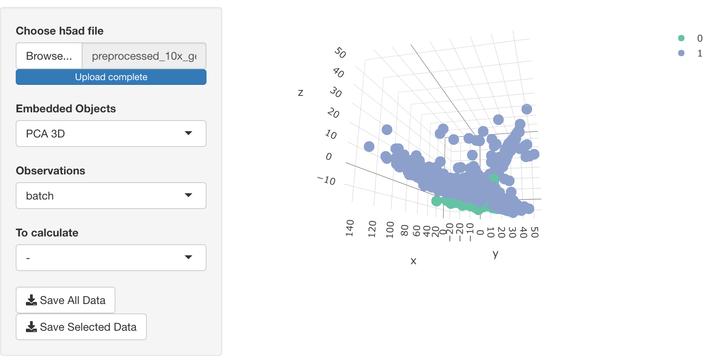

This Shiny application is built based on the python package epiScanpy, which is a tool for single-cell epigenomic analysis (Danese et al. 2019).
Installation
The installation consists of 2 parts: R libraries and Python libraries.
Install R libraries
You can install the released version of epishiny from CRAN with:
install.packages("epishiny")Alternatively, you can install the dev version of KRIS from Gitlab with
install.packages("remotes")
remotes::install_github("kridsadakorn/epishiny", dependencies = TRUE)Install Python libraries
Without the virtual library, you can install EpiScanpy using pip:
If you consider to use conda, virtualenv or any other virtual environmet, you must set RETICULATE_PYTHON to the proper path of python, by running
Sys.setenv(RETICULATE_PYTHON = "/path/to/python")If you want RETICULATE_PYTHON to be set every time when the application starts, you can set RETICULATE_PYTHON in .Rprofile in your home directory.
Document
You can see the reference manual from: https://www.biostatgen.org/epishiny/
Run the application
You can start the application by calling the function epishiny().
Then, the shiny application will be launched:
